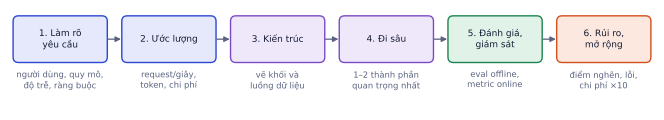

Giai đoạn P10 · Portfolio và đi làmTuần 24–45Có nội dung đầy đủ
Phỏng vấn AI Engineer thường gồm bốn vòng: coding (Python, cấu trúc dữ liệu), nền tảng ML (hỏi đáp kiến thức), thiết kế hệ thống ML (thiết kế một hệ RAG, hệ gợi ý), và hành vi (kể về dự án, cách làm việc). Bài này cho bạn khung trả lời từng vòng, một ví dụ thiết kế hệ thống đi đủ 6 bước có số liệu, và một bộ bài luyện có đáp án.
Người phỏng vấn chấm gì
Vì sao cần học
Biết kiến thức chưa đủ: phỏng vấn đo cách bạn dùng kiến thức dưới áp lực thời gian. Nhiều ứng viên giỏi trượt vì im lặng code, hoặc trả lời đúng mà không nói đánh đổi. Có khung trả lời sẵn giúp bạn thể hiện đúng năng lực đã có sau 9 phần của lộ trình.
Vòng
Chấm
Coding
hiểu đề, chọn cấu trúc dữ liệu, code sạch, tự kiểm tra
Nền tảng ML
hiểu cơ chế, không chỉ thuộc định nghĩa; biết khi nào dùng
Thiết kế hệ thống
làm rõ yêu cầu, ước lượng bằng số, đánh đổi, đánh giá
Hành vi
trách nhiệm, học từ sai lầm, làm việc với người khác
Coding
Đa số vòng coding cho AI Engineer ở mức LeetCode easy–medium, bằng Python. Trọng tâm: mảng, chuỗi, hash map, hai con trỏ, sắp xếp, heap, BFS/DFS cơ bản. Ngoài ra hay có bài thực tế: xử lý dữ liệu, viết một hàm metric, cài đặt k-means hay softmax bằng numpy.
Quy trình khi làm bài:
Hỏi lại đề: đầu vào là gì, kích thước bao nhiêu, ca biên (rỗng, trùng, số âm).
Nói hướng giải và độ phức tạp trước khi code. Nếu chỉ nghĩ ra cách chậm, nói cách chậm trước rồi cải thiện.
Code sạch: tên biến có nghĩa, hàm nhỏ.
Tự chạy tay một ví dụ, kể cả ca biên.
Nêu cách tối ưu hoặc mở rộng nếu còn thời gian.
Ví dụ từng bước
Đề: "Viết softmax bằng numpy."
Cách trả lời tốt nói to: "Softmax là exp chia tổng exp. Nhưng exp(1000) tràn số thành inf. Vì softmax không đổi khi trừ cùng một hằng số, tôi trừ giá trị lớn nhất trước."
importnumpyasnpdefsoftmax(z):z=np.asarray(z,float)e=np.exp(z-z.max(axis=-1,keepdims=True))# trừ max: chống tràn sốreturne/e.sum(axis=-1,keepdims=True)softmax([1000,1001,1002])# [0.090, 0.245, 0.665]; bản không trừ max cho nan
Kết quả khi chạy
array([0.09003057, 0.24472847, 0.66524096])
Điểm cộng nằm ở việc tự nêu vấn đề tràn số và hỗ trợ batch (axis=-1), không phải ở số dòng code.
Nền tảng ML
Câu hỏi hay gặp (bạn đã học tất cả trong lộ trình):
Chủ đề
Câu hỏi ví dụ
Bài đã học
Đánh giá
Precision và recall khác nhau thế nào, khi nào ưu tiên cái nào? Data leakage là gì?
P1.4
Train
Overfitting nhận biết và xử lý thế nào? Vì sao cần chuẩn hóa đầu vào?
P1.2, P2.2
Deep learning
Vì sao chia √d_k trong attention? BatchNorm khác LayerNorm thế nào?
P3.1, P2.2
LLM
RAG hay fine-tune khi nào? Temperature làm gì? Hallucination giảm thế nào?
P4.1, P4.2, P6.1
Production
Đo chất lượng hệ LLM thế nào? Giảm độ trễ và chi phí thế nào?
P4.3, P6.3, P8.3
Trả lời theo khung: định nghĩa ngắn → trực giác hoặc ví dụ → khi nào dùng / đánh đổi.
Ví dụ từng bước
"Vì sao chia √d_k trong attention?"
Định nghĩa: điểm attention là tích vô hướng q·k chia √d_k trước softmax.
Trực giác: nếu q, k có các thành phần ngẫu nhiên phương sai 1, tích vô hướng của d_k thành phần có phương sai d_k. Với d_k = 64, điểm có độ lệch chuẩn 8; softmax của các số lớn như vậy gần như one-hot, gradient gần 0, train rất chậm.
Đánh đổi: chia √d_k đưa độ lệch chuẩn về khoảng 1, softmax "mềm", gradient ổn định.
Ba câu, có con số, có lý do. Tốt hơn nhiều câu "để chuẩn hóa".
Thiết kế hệ thống ML
Khung 6 bước, nói to từng bước:

Sáu bước của một buổi thiết kế hệ thống. Đừng nhảy thẳng vào bước 3.
Làm rõ yêu cầu: người dùng, quy mô, độ trễ, chất lượng mong muốn, ràng buộc (dữ liệu nhạy cảm, ngân sách).
Ước lượng: số request/giây, dữ liệu, token, chi phí.
Kiến trúc tổng thể: vẽ các khối và luồng dữ liệu.
Đi sâu thành phần quan trọng: ví dụ retrieval, model, cache.
Đánh giá và giám sát: offline eval, online metric, A/B test.
Rủi ro và mở rộng: điểm nghẽn, lỗi, an toàn, chi phí khi tăng gấp 10.
Ví dụ từng bước
Đề: "Thiết kế trợ lý hỏi đáp tài liệu nội bộ cho công ty 2.000 nhân viên."
Làm rõ: tài liệu gì (quy trình, chính sách, khoảng 5.000 file)? Phân quyền theo phòng ban? Tiếng Việt? Độ trễ chấp nhận khoảng 3 giây? Dữ liệu có được gửi ra API bên ngoài không?
Ước lượng: 2.000 người × 8 câu/ngày = 16.000 câu/ngày, dồn vào 8 giờ làm việc: khoảng 0,56 câu/giây, đỉnh gấp 3 khoảng 1,7 câu/giây. Mỗi câu khoảng 3.000 token đầu vào (câu hỏi + 5 đoạn): 48 triệu token/ngày, với giá ví dụ 1 USD/triệu token là 48 USD/ngày: không đáng lo, nhưng cần cache cho câu hỏi lặp.
Kiến trúc: API (xác thực SSO) → retrieval (hybrid search trên pgvector, lọc theo phòng ban) → reranker → LLM → trả lời có trích dẫn; pipeline nạp tài liệu chạy nền qua hàng đợi.
Đi sâu: phân quyền trong truy vấn tìm kiếm (P8.4); chia đoạn theo cấu trúc tài liệu; cập nhật khi tài liệu đổi.
Đánh giá: bộ 150 câu hỏi có đáp án từ các phòng ban; recall@5, faithfulness; nút thích/không thích; mẫu có nhãn mỗi tuần.
Rủi ro: rò tài liệu giữa phòng ban, prompt injection trong tài liệu, tài liệu cũ mâu thuẫn tài liệu mới; tăng 10 lần người dùng thì vẫn chỉ khoảng 17 câu/giây, một GPU tự host hoặc API đủ sức.
Chú ý bước 2 dẫn thẳng tới quyết định: quy mô nhỏ nên chi phí LLM không phải vấn đề chính; vấn đề chính là phân quyền và chất lượng retrieval.
Lỗi hay gặp
Vẽ kiến trúc ngay phút đầu. Thiết kế "chatbot cho 10 triệu người dùng" và "cho 200 nhân viên" khác nhau hoàn toàn. Không hỏi yêu cầu và không ước lượng thì mọi lựa chọn sau đều là đoán, và người phỏng vấn sẽ ghi nhận đúng điều đó.
Hành vi: STAR
Kể chuyện theo Situation (bối cảnh) – Task (nhiệm vụ của bạn) – Action (bạn đã làm gì, cụ thể, dùng "tôi") – Result (kết quả, có số, và bài học).
Ví dụ từng bước
"Kể về một lần bạn mắc lỗi."
S: Dự án RAG cho quy chế đào tạo, tôi báo cáo recall@5 0,92.
T: Tôi chịu trách nhiệm bộ eval.
A: Khi thêm câu hỏi mới, điểm tụt mạnh. Tôi phát hiện bộ eval cũ được sinh từ chính các đoạn đã chia, nên câu hỏi trùng từ khóa với đoạn đúng. Tôi viết lại 60 câu bằng cách diễn đạt khác, tách riêng tập dùng để chỉnh cấu hình.
R: Recall@5 thật là 0,78; sau khi thêm hybrid search lên 0,86. Bài học: bộ eval phải được tạo độc lập với hệ thống đang đo.
(Câu chuyện minh họa; dùng chuyện thật của bạn.) Câu chuyện về sai lầm tốt có phần R cho thấy bạn sửa được và rút ra quy tắc.
Chuẩn bị sẵn 5 câu chuyện từ dự án và thực tập: một lần giải quyết vấn đề khó, một lần sai và sửa, một lần bất đồng, một lần học nhanh thứ mới, một lần làm việc nhóm. Một câu chuyện tốt dùng được cho nhiều câu hỏi khác nhau.
Ghi nhớ: ở mọi vòng, người phỏng vấn chấm cách bạn suy nghĩ nhiều hơn đáp án cuối. Nói ra giả định và đánh đổi.
Tự kiểm tra nhanh
Tóm tắt bài và thuật ngữ
Vòng
Khung
Coding
hỏi đề → nói hướng + độ phức tạp → code → chạy tay → tối ưu
Nền tảng ML
định nghĩa → trực giác/ví dụ có số → đánh đổi
Thiết kế hệ thống
yêu cầu → ước lượng → kiến trúc → đi sâu → đánh giá → rủi ro
Hành vi
STAR, kết quả có số và bài học
Thuật ngữ
Nghĩa
time / space complexity
độ phức tạp thời gian / bộ nhớ
edge case
ca biên
back-of-the-envelope estimate
ước lượng nhanh bằng phép tính đơn giản
trade-off
đánh đổi
STAR
Situation, Task, Action, Result
numerical stability
ổn định số (tránh tràn, mất chính xác)
Ô tự chấm đã giải đúng0 / 1
Bài 1
Ước lượng cho thiết kế hệ thống
tính tay
Chatbot cho 1 triệu người dùng, mỗi người 5 câu hỏi/ngày, lưu lượng đỉnh gấp 3 trung bình. Mỗi câu hỏi tốn 1.500 token đầu vào. Giá ví dụ 1 USD cho 1 triệu token đầu vào.
Lời giải
5 triệu request/ngày chia 86.400 giây ≈ 58 request/giây, đỉnh ≈ 174. Token: 5·10⁶ × 1.500 = 7,5·10⁹ token, 7.500 USD/ngày chỉ phần đầu vào. Con số này dẫn tới các quyết định thiết kế: cache, model nhỏ cho câu dễ, rút gọn context.
Bài 2
Bài coding
code
Cho danh sách embedding đã chuẩn hóa (list các list số) và một vector truy vấn, trả về chỉ số của k vector gần nhất theo cosine, không dùng numpy, độ phức tạp O(n log k).
Gợi ý
Cosine của vector đã chuẩn hóa là tích vô hướng. Dùng heap kích thước k (heapq) để giữ k phần tử lớn nhất khi duyệt.
Code tham khảo
importheapqdeftop_k(embs,q,k):heap=[]# min-heap (điểm, chỉ số), giữ k phần tử lớn nhấtfori,einenumerate(embs):s=sum(a*bfora,binzip(e,q))iflen(heap)<k:heapq.heappush(heap,(s,i))elifs>heap[0][0]:heapq.heapreplace(heap,(s,i))return[ifor_,iinsorted(heap,reverse=True)]print(top_k([[1,0],[0.6,0.8],[0,1],[0.8,0.6]],[1,0],2))# [0, 3]
Kết quả khi chạy
[0, 3]
Mỗi phần tử tốn O(d) để tính điểm và O(log k) cho heap: tổng O(n·d + n log k). Nói thêm: với hàng triệu vector, dùng index gần đúng (HNSW).
Bài 3
Câu hỏi nền tảng
khái niệm
Trả lời ngắn (3–5 câu) theo khung định nghĩa → trực giác → đánh đổi:
Vì sao không chọn ngưỡng phân loại trên tập test?
RAG hay fine-tune cho chatbot chính sách công ty thay đổi hằng tháng?
Làm sao biết một thay đổi prompt thật sự tốt hơn?
Lời giải
Ngưỡng là một siêu tham số; chọn trên test làm test bị "học", kết quả báo cáo lạc quan giả. Chọn trên validation, test dùng một lần. Đánh đổi: cần tách thêm dữ liệu.
RAG: kiến thức đổi thường xuyên, cần trích dẫn, cập nhật bằng cách thay tài liệu. Fine-tune hợp để đổi cách trả lời, không hợp để nạp kiến thức thay đổi. Có thể kết hợp.
Chạy bộ eval cố định trước và sau, so theo cặp trên cùng mẫu, kiểm tra sai số (cỡ mẫu), đọc các ca thay đổi kết quả; sau đó A/B test online nếu quan trọng.
Bài 4
Thiết kế hệ thống
thiết kế
Thiết kế hệ thống hỏi đáp cho 1 triệu tài liệu nội bộ của một công ty 5.000 nhân viên, có phân quyền theo phòng ban. Trả lời theo khung 6 bước, mỗi bước 2–4 ý.
Lời giải
Yêu cầu: 5.000 người, khoảng 2 request/giây đỉnh, p95 < 5 s, trích dẫn bắt buộc, phân quyền theo phòng ban, dữ liệu không ra ngoài nếu chính sách yêu cầu.
Kiến trúc: ingest (parse, chunk, embedding, metadata quyền) qua hàng đợi → vector store có lọc + BM25 → API: xác thực → truy vấn có lọc quyền → hybrid + rerank → LLM sinh có trích dẫn → guardrails → log.
Đi sâu: lọc quyền ngay trong truy vấn; cập nhật tăng dần khi tài liệu đổi; reranker.
Eval: bộ câu hỏi theo phòng ban, recall@k, judge, tỉ lệ từ chối đúng; online: thích/không thích, giám sát.
Rủi ro: lộ dữ liệu giữa phòng ban, tài liệu cũ, chi phí tăng; mở rộng bằng cache, model nhỏ cho câu dễ.
Bài 5
Câu chuyện STAR
khái niệm
Viết một câu chuyện STAR (150–200 từ) về một lần bạn gặp vấn đề kỹ thuật khó trong lộ trình hoặc thực tập, có kết quả đo được.
Lời giải
Một câu chuyện tốt: bối cảnh ngắn (1–2 câu), nhiệm vụ của bạn, hành động cụ thể dùng "tôi" (tôi đo, tôi phát hiện, tôi thử A rồi B vì…), kết quả có số và một bài học. Ví dụ khung: "Ở Lab 5, recall@5 chỉ 0.62 (S). Tôi cần đưa lên trên 0.8 trước demo (T). Tôi viết bộ 50 câu eval, phân loại lỗi và thấy 40% lỗi là mã sản phẩm bị bỏ lỡ, nên thêm BM25 và RRF, rồi reranker (A). Recall@5 lên 0.86, và tôi học được phải đo retrieval riêng trước khi đổi prompt (R)."
Bốn buổi phỏng vấn thử
Các bước
Coding: làm 50 bài LeetCode easy–medium theo chủ đề (mảng, hash map, hai con trỏ, heap, BFS/DFS), ghi lại bài sai và làm lại sau 1 tuần.
Nền tảng ML: tự viết 100 câu hỏi ngắn từ các bài trong lộ trình (mỗi bài 2–3 câu), trả lời thành tiếng trong 1 phút mỗi câu.
Thiết kế hệ thống: luyện 3 đề (hệ RAG, hệ gợi ý sản phẩm cho shop, pipeline kiểm duyệt nội dung ảnh) theo khung 6 bước, vẽ sơ đồ.
Hành vi: viết 5 câu chuyện STAR.
Nhờ Claude đóng vai phỏng vấn viên cho từng vòng (45 phút mỗi vòng), yêu cầu chấm theo thang "không mời / phân vân / mời vòng sau" kèm nhận xét.
Xong khi
Qua cả 4 buổi thử ở mức "sẽ mời vòng sau".
Có sổ ghi các câu trả lời yếu và đã luyện lại.
Xong bài khiQua cả 4 buổi thử ở mức 'sẽ mời vòng sau'.